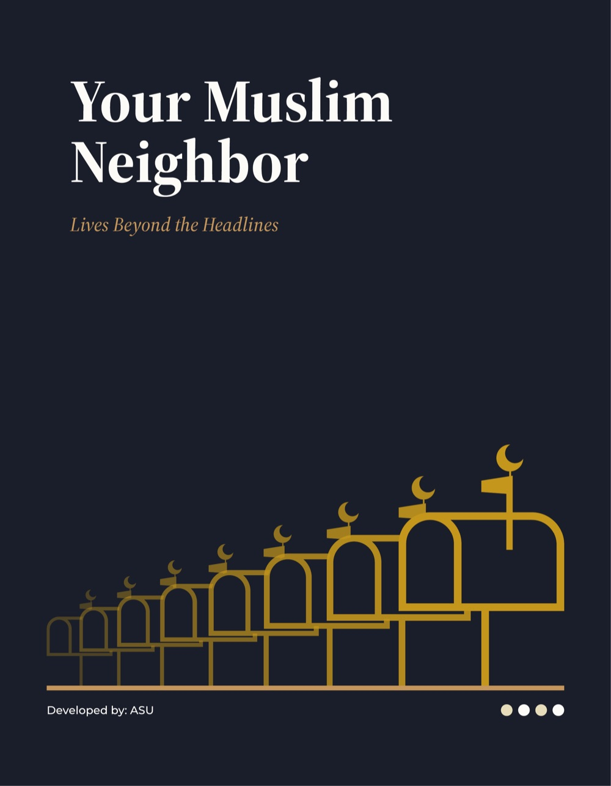
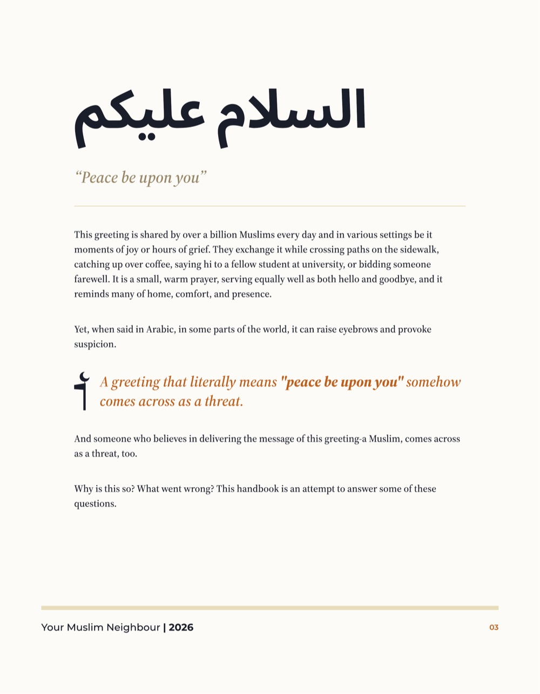
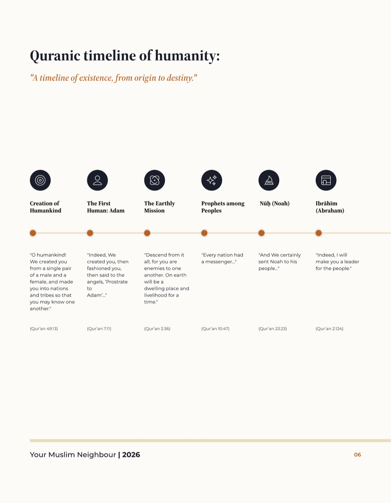
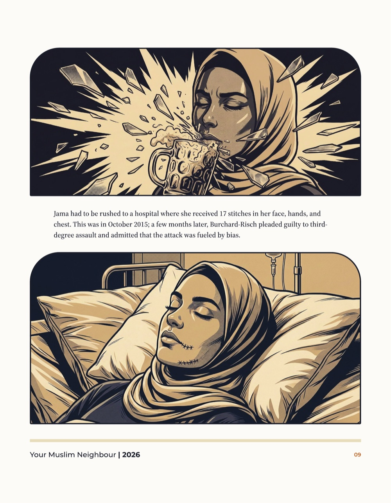
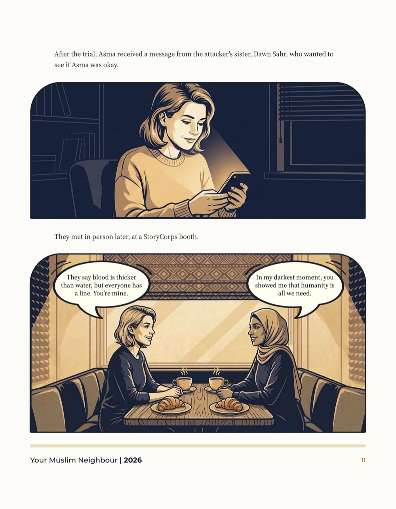

Don't take our word for it. Watch the work.
Project Logos closes the two gaps every social-change organisation faces: not having the evidence you need, and having it but moving no one. The proof is below — films you can play, publications you can read, live data you can filter. All on this page.
Films that carry the research


Read what we ship

83-page handbookA full publication pipeline in one artefact: research and case documentation, narrative writing, original illustration, and print-ready design. Browse the sample pages, or open any page in the reader and use your arrow keys.




Live data, not screenshots
Every entry is source-linked and dated. Built and maintained by Project Logos for a national civil-society documentation programme — running here on the real dataset.
Long-form, on the record


The visual layer
Five practices, one pipeline
Everything above came out of the same team. Most consultancies do one of these; we built the studio so the people who design your study can also build the dashboard and cut the film.
Research & Evidence
End-to-end studies, surveys and qualitative research — from question to defensible report.
BMonitoring, Evaluation & Learning
MEAL frameworks, impact evaluation and documentation systems built for accountability.
CStorytelling & Media
Field documentary and video production — story to screen, on the evidence.
DDigital & Data Products
Websites, dashboards and trackers your team can run without a developer on standby.
ECapacity Building
Training and embedded coaching in methods, data, MEAL and media skills.
How we work
Five steps, every time — click a stage to see what it actually involves. No surprises between the proposal and the final handover.
Listen
A free scoping conversation to understand the problem, not just the brief.
We ask what decision the evidence needs to support, who reads the output, and what's already been tried. Half our job is asking better questions before a proposal exists.
Propose
A written proposal — methodology, timeline, team, deliverables and costs.
No verbal estimates. You get a document you can take to a board or a donor, with a named team and a defensible method.
Design
Inception phase, tools and protocols, sign-off before anything goes to field.
Sampling plans, instruments, ethics review and consent architecture are built and agreed before a single interview happens.
Deliver
Execution with agreed check-ins and no surprises.
Field monitoring, quality control and regular check-ins — you see progress as it happens, not just at the end.
Hand over
Everything transferred, documented and explained. Your data stays yours.
Datasets, code, tools and training — no lock-in, no dependency. We'd rather leave a capable team behind than a subscription.
Led by practitioners
Project Logos is fronted by three people who have each spent a decade doing the work — not managing it from a distance.
Ali Javed
Founder & Chief ExecutiveEconomist by training (M.Phil., Jawaharlal Nehru University) and founder of Nous Network, the research-and-media organisation he has led since 2022. Has served as Principal Investigator on national survey research, including NFHS-based socioeconomic analysis, and leads client scoping and final sign-off across every engagement.
Abid Faheem
Chief ResearcherPublic health researcher (PhD, Centre of Social Medicine & Community Health, JNU) with 8+ years in mixed-method research, health systems and socio-economic studies. Owns research methodology across the studio and enforces the standard that makes the work defensible: every claim sourced, every method documented.
Md Meharban
Video Journalist & Director of PhotographyVideo journalist and photojournalist with 7 years' experience, published in National Geographic, The New York Times, The Atlantic and Al Jazeera. A WaterAid Fellow mentored by Pulitzer Prize–winning photojournalist Danish Siddiqui, he leads field cinematography and production across documentaries and campaigns.